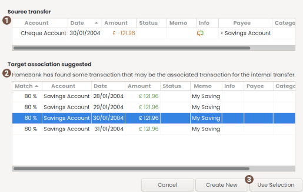

Using transfer selection dialog
 Source transfer
Source transfer
Display the transaction detail that triggered this pop-up
 Target association suggested
Target association suggested
List the transaction that may match the source transfer you just added/changed to a transfer. A matching rate is also computed.
The matching criteria are:
- currency is the same
- date +/- xx days (set into preference since v5.3, previous was exact date match)
- amount is the same
- transaction not already a transfer
 Action button area
Action button area
| Use Selection | After clicking on the correct target into the list (otherwise this button is disabled), this action will link the transfer and the selection as its transfer target. |
|---|---|
| Create New | will create a new target transfer into the destination account. |
| Cancel (or dialog close) |
 This will abort the target creation This will abort the target creationand insert a normal transaction instead. |